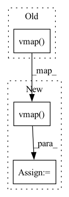

Pattern ID :31028

Before Change
points = jnp.linspace(-0.5, 0, 10)
interp_ys = jax.vmap(interp.evaluate)(points)
true_ys = jax.vmap(lambda p: jnp.polyval(jnp.array([-1.6, -0.8, 0.8, 0.5]), p))(
points
)[:, None]
assert jnp.allclose(interp_ys, true_ys)
After Change
points = jnp.linspace(-0.5, 0, 10)
interp_ys = jax.vmap(interp.evaluate)(points)
true_ys = jax.vmap(lambda p: jnp.polyval(jnp.array([-1.6, -0.8, 0.8, 0.5]), p))(
points
)
if unsqueeze:
true_ys = true_ys[:, None]
assert jnp.allclose(interp_ys, true_ys)
derivs = jax.vmap(interp.derivative)(points)
In pattern: SUPERPATTERN
Frequency: 3
Non-data size: 3
Instances
Fragment ID: 91143214
Project Name: patrick-kidger/diffrax
Commit Name: b0e79b40437667d84e75a2984ed26a576d610c46
Time: 2021-11-09
Author: 33688385+patrick-kidger@users.noreply.github.com
File Name: test/test_global_interpolation.py
M Class Name: AnonimousClass
N Class Name: AnonimousClass
M Method Name: test_cubic_interpolation_deriv0(1)
N Method Name: test_cubic_interpolation_deriv0(0)
M Parent Class:
N Parent Class:
M File Name: test/test_global_interpolation.py
N File Name: test/test_global_interpolation.py
M Start Line: 185
M End Line: 219
N Start Line: 202
N End Line: 246
'>
Before Change
points = jnp.linspace(0, 1.0, 10)
interp_ys = jax.vmap(interp.evaluate)(points)
true_ys = jax.vmap(lambda p: jnp.polyval(jnp.array([1.5, -3, 0.8, 0.5]), p))(
points
)[:, None]
assert jnp.allclose(interp_ys, true_ys)
After Change
points = jnp.linspace(0, 1.0, 10)
interp_ys = jax.vmap(interp.evaluate)(points)
true_ys = jax.vmap(lambda p: jnp.polyval(jnp.array([1.5, -3, 0.8, 0.5]), p))(points)
if unsqueeze:
true_ys = true_ys[:, None]
assert jnp.allclose(interp_ys, true_ys)
derivs = jax.vmap(interp.derivative)(points)
'>
Fragment ID: 91143210
Project Name: patrick-kidger/diffrax
Commit Name: b0e79b40437667d84e75a2984ed26a576d610c46
Time: 2021-11-09
Author: 33688385+patrick-kidger@users.noreply.github.com
File Name: test/test_global_interpolation.py
M Class Name: AnonimousClass
N Class Name: AnonimousClass
M Method Name: test_cubic_interpolation_no_deriv0(1)
N Method Name: test_cubic_interpolation_no_deriv0(0)
M Parent Class:
N Parent Class:
M File Name: test/test_global_interpolation.py
N File Name: test/test_global_interpolation.py
M Start Line: 151
M End Line: 180
N Start Line: 162
N End Line: 198
'>
Before Change
prev_ys = jnp.concatenate([y0[None], prev_ys])
prev_derivs = jnp.concatenate([deriv0[None], prev_derivs])
ds, cs, bs, as_ = jax.vmap(jax.vmap(_hermite_impl))(
prev_ts, prev_ys, prev_derivs, ts, next_ts, next_ys
)
After Change
hermite_impl = _hermite_impl
for _ in range(len(ys.shape)):
hermite_impl = jax.vmap(hermite_impl)
ds, cs, bs, as_ = hermite_impl(prev_ts, prev_ys, prev_derivs, ts, next_ts, next_ys)
return ds, cs, bs, as_
'>
Fragment ID: 91143208
Project Name: patrick-kidger/diffrax
Commit Name: b0e79b40437667d84e75a2984ed26a576d610c46
Time: 2021-11-09
Author: 33688385+patrick-kidger@users.noreply.github.com
File Name: diffrax/global_interpolation.py
M Class Name: AnonimousClass
N Class Name: AnonimousClass
M Method Name: _backward_hermite_coefficients(5)
N Method Name: _backward_hermite_coefficients(5)
M Parent Class:
N Parent Class:
M File Name: diffrax/global_interpolation.py
N File Name: diffrax/global_interpolation.py
M Start Line: 348
M End Line: 380
N Start Line: 599
N End Line: 629